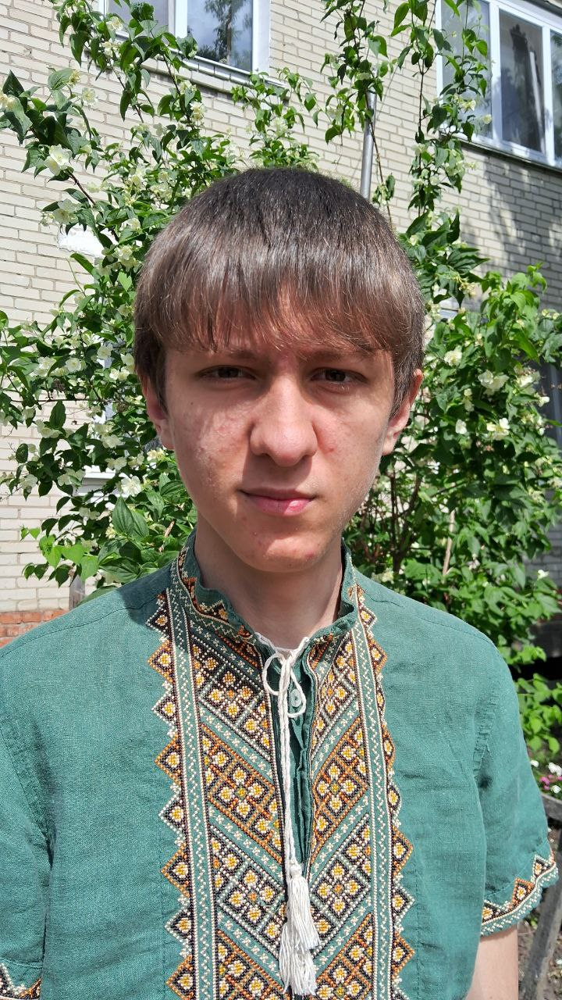
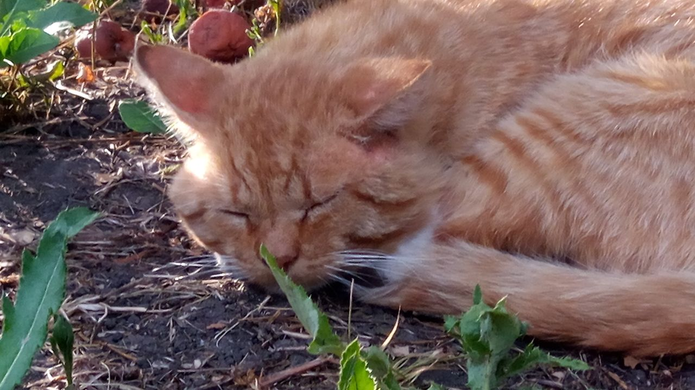

👋 Привіт! Я Олександр
Я майбутній розробник, який захоплюється бекендом і базами даних, а зараз активно вивчаю фронтенд, щоб стати повноцінним fullstack‑інженером. Працюю зі стеком:
- Java
- Python
- SQL
- HTML5
- CSS
- JavaScript
У вільний час люблю:
- досліджувати нові технології
- вчитись через практику
- читати книжки, які надихають і змушують дивитись на світ глибше
Особливо мені до вподоби епічні історії та пригоди. Прочитав цілі серії:
- Володар перснів (J.R.R. Tolkien) — за її глибину, атмосферу і світобудову
- Коти-Вояки (Erin Hunter) — за харизматичних персонажів і незвичний світ
Також цікавлюсь геймдевом і експериментую з Lua — просто, легко і захопливо.
Ще одна важлива частина мого життя — це участь у соціальних ініціативах. Я маю честь бути амбасадором Star for Life Ukraine — організації, що допомагає молоді вірити у власні сили, ставити амбітні цілі та впевнено йти до них. Для мене це не просто волонтерство, а спосіб надихати інших, ділитися знаннями та зростати разом з командою однодумців.
🐱 А це Степан — мій улюблений кіт
Степан — незалежний спостерігач за життям крізь вікно. Його м’яка шерсть, тепле муркотіння і час від часу — прояви ніжності створюють вдома атмосферу затишку й спокою.
💤 У світі, який завжди поспішає, Степан нагадує мені, що іноді варто просто посидіти, подивитися у вікно — і подумати.